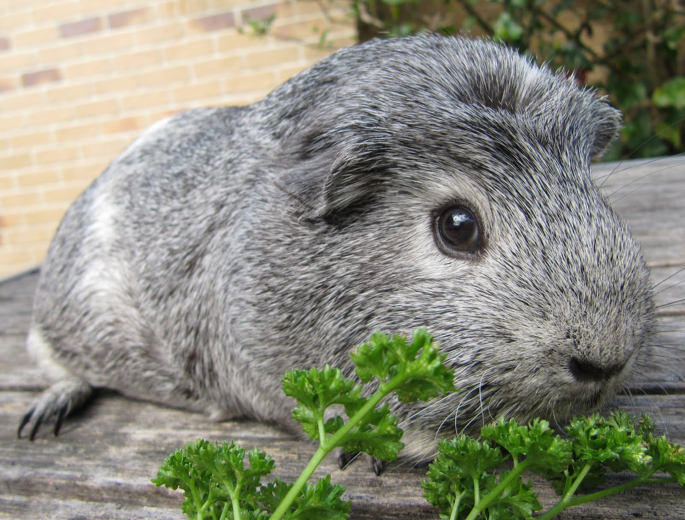
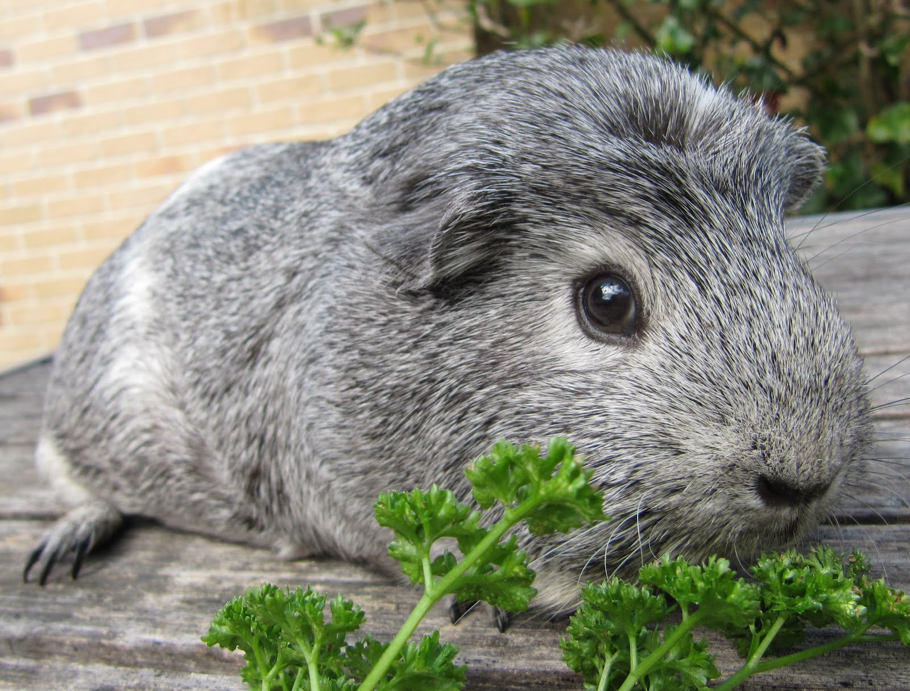

Крестед
Ця порода свинок відрізняється тим, що має чубчик на голові. Він розташовується між її вушками і очима. За характером крестеди виховані, спокійні і полохливі. У той же час милі та ласкаві, люблять людей і увагу. Легко приручаються і прив'язуються до свого господаря. Їх можна розділити на 3 підвиди: англійський, англійський кольоровий та американський крестеди:
Англійський крестед – короткошерста морська свинка, шерсть щільно прилягає до тіла, блискуча. На лобі свинки є розетка. Великі очі, вуха повинні прилягати щільно до голови. Забарвлення однотонне.
Англійський кольоровий крестед – відрізняється від англійського крестеда забарвленнями. Свинка може бути забарвлена в два або три кольори.
Американський крестед – короткошерста морська свинка. Тіло свинки забарвлене в один колір, як у селфу, тільки на голові є розетка білого кольору, чим відрізняється від англійських крестедів. Прилягає шерсть щільно до тіла, гладка та блискуча.
 
